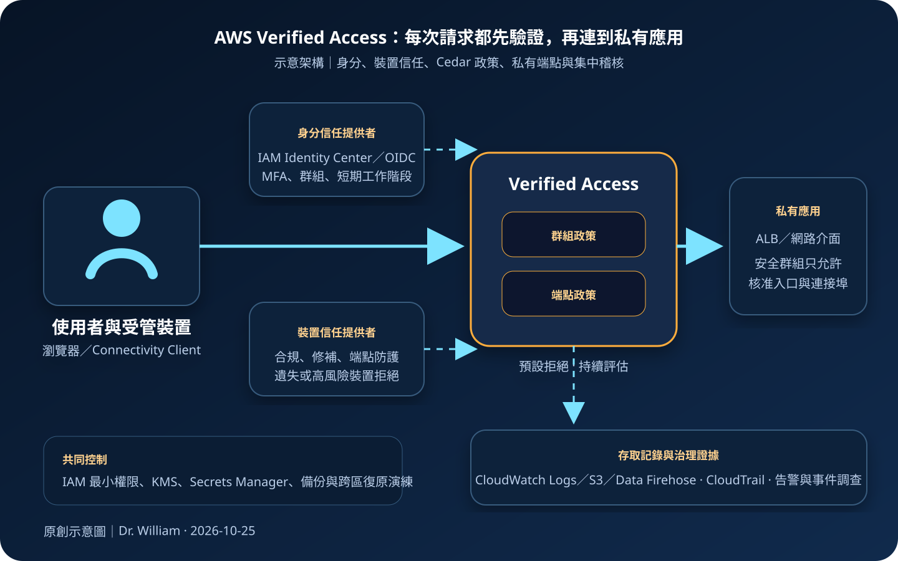

AWS Verified Access：零信任應用存取、信任資料與政策控制
AWS Verified Access 讓組織依使用者身分、群組與裝置信任等資料，對每個應用存取請求執行細粒度政策判斷。它能讓私有應用不必先把整段網路開給使用者，但零信任入口仍須與應用授權、網路隔離、端點管理、加密、稽核及復原設計共同運作。
作者：Dr. William｜查閱與發布：2026-10-25
服務定位
AWS Verified Access 是以零信任原則提供應用層存取的受管服務。管理者將身分與裝置信任提供者連到 Verified Access instance，再以群組及端點政策描述誰能在什麼條件下存取特定應用。服務在請求進入應用前評估信任資料與政策，允許時才把流量送往設定的 Application Load Balancer 或網路介面等目的地。
它適合需要讓員工、承包商或合作夥伴從外部安全存取私有 Web 應用，以及透過 AWS Connectivity Client 存取受支援的非 HTTP 應用。若需求是讓使用者取得整個 VPC 或多個子網路的通用網路連線、固定站點互連、任意協定的傳統遠端存取，或應用無法配合身分與端點生命週期，則應比較 Client VPN、Site-to-Site VPN、Direct Connect 或其他 SASE／ZTNA 架構。
核心概念與服務邊界
存取控制元件
- Verified Access instance：區域內的頂層容器，連結信任提供者並承載群組與端點。
- Trust provider：提供使用者或裝置信任資料；使用者身分可整合 IAM Identity Center 或相容 OIDC 提供者。
- Verified Access group：將具共同安全需求的端點歸組，套用共享政策。
- Verified Access endpoint：將外部請求導向指定應用；端點另有自己的細粒度政策。
- Cedar 政策：依信任資料與請求內容表達允許條件；群組與端點政策必須共同允許。
- 預設拒絕：沒有符合允許條件的請求不會進入應用，新增端點不代表自動開放。
連線、記錄與治理
- Web 存取：使用者可經瀏覽器連到 Verified Access 網域，再完成身分驗證與政策評估。
- 非 HTTP 存取：受支援情境可使用 AWS Connectivity Client，將核准的應用連線送到網路介面端點。
- 安全群組：端點與目標資源仍需最小化來源、目的與連接埠，避免旁路入口。
- 存取日誌：可送往 CloudWatch Logs、Amazon S3 或 Kinesis Data Firehose，支援監控與調查。
- CloudTrail：記錄建立、修改與刪除 instance、群組、端點、政策及信任設定等控制面活動。
- 區域邊界：Verified Access 資源具有區域性，跨區服務持續性需要另建入口與切換流程。
適合與不適合的使用情境
適合
- 內部管理後台、報表、開發工具或合作夥伴入口不應直接公開，也不希望使用者取得整段 VPC 可達性。
- 組織已有集中式身分提供者、MFA、群組治理與受管裝置平台，可把信任資料轉為政策條件。
- 不同應用或端點需要不同的角色、裝置合規、來源或工作階段條件。
- 需要將應用入口政策與每次存取記錄集中管理，支援稽核、威脅調查及離職停權。
- 希望逐步從廣域 VPN 轉為逐應用授權，但仍保留必要的私有後端與網路分段。
不適合或不能單獨完成
- 使用者需要通用的網路層存取、廣泛主機管理、檔案共享或大量未受支援協定。
- 應用沒有自身授權控制，卻把通過入口視為可讀寫所有資料的充分條件。
- 身分群組與裝置狀態不可信、未即時更新，或離職與遺失裝置無法迅速撤銷。
- 只建立 Verified Access，卻仍保留可從網際網路、跳板、舊 VPN 或寬廣安全群組直接到達後端的旁路。
- 要求單一區域端點自動承擔跨區災難復原；第二區域需另建資源、憑證、DNS、政策與後端。
示意故事案例：研發公司的逐應用遠端存取
以下為示意案例，不代表特定企業或正式部署。 一家軟體公司原本讓開發、客服與外包人員都透過同一組遠端 VPN 進入共享網段。即使每個人只需一套工具，連線後仍可能掃描到其他內部服務，權限邊界過度依賴網段與人工維護。
公司把原始碼檢視、客服後台與監控平台分別建立 Verified Access endpoints，並依敏感度歸入不同 groups。使用者透過 IAM Identity Center 與 MFA 驗證；受管裝置再提供修補、磁碟加密與端點防護狀態。群組政策要求公司身分與合規裝置，端點政策進一步限制部門群組。後端保留在私有子網路，安全群組只接受核准入口與必要連接埠。
管理操作使用 IAM 最小權限、MFA 與短期憑證；應用程式機密放在 Secrets Manager 或 Parameter Store，資料與日誌依分類使用 KMS。存取日誌集中到 S3 與 CloudWatch，CloudTrail 監控政策及端點變更。公司也保留跨區 IaC、資料備份與 DNS 切換程序，避免把單一入口誤當成完整災難復原。

建置與運作流程
- 盤點應用：列出使用者、角色、協定、網域、目的地、連接埠、資料分類、裝置要求、RTO、RPO 與現有旁路。
- 選擇信任來源：整合 IAM Identity Center 或相容 OIDC 身分提供者；需要裝置信任時確認供應商整合、訊號內容與更新延遲。
- 建立 instance：在目標區域建立 Verified Access instance，關聯核准的使用者與裝置信任提供者。
- 設計群組：依資料敏感度、業務責任與共同政策建立 groups，不只依組織名稱分組。
- 建立端點：選擇應用端點型態與目的地，設定網域、憑證、子網路及安全群組；非 HTTP 情境確認 Connectivity Client 支援條件。
- 撰寫政策：先從預設拒絕開始，使用最小必要群組、裝置狀態與請求條件；將共享條件放在群組，特例放在端點。
- 收斂網路：後端只允許必要入口與連接埠，移除公網、舊 VPN、跳板或寬廣 CIDR 的非必要直接路徑。
- 保護管理面：Verified Access、IAM、憑證、DNS、日誌與信任提供者設定採最小權限、MFA、短期憑證、職責分離及變更覆核。
- 保護機密與資料：應用機密使用 Secrets Manager 或 Parameter Store，資料、備份與日誌依需求使用 KMS。
- 啟用記錄：將存取日誌送往 CloudWatch Logs、S3 或 Data Firehose，啟用 CloudTrail，對拒絕暴增、異常來源與政策變更告警。
- 測試政策：逐一驗證核准、拒絕、群組變更、MFA 失敗、裝置不合規、工作階段到期、憑證更新與旁路封鎖。
- 分批切換：先遷移低風險應用，觀察支援與誤拒絕，再逐步收斂舊 VPN 權限。
- 準備復原：以 IaC 保存 instance、group、endpoint、policy、日誌與監控設定，在第二區域建立可驗證的重建及 DNS 切換流程。
成本、可用性與維運考量
Verified Access 成本主要受應用端點使用時間與處理資料量影響，另需納入 ALB、資料傳輸、公有 IPv4、DNS、ACM 私有憑證、CloudWatch Logs、S3、Data Firehose、CloudTrail、KMS、身分與裝置管理服務等費用。即使流量不高，只要端點持續運作仍可能產生固定時數成本；大型檔案、遠端桌面或高頻資料傳輸也會放大資料處理成本。
受管入口可減少自行維護代理節點，但應用後端的多可用區、容量、健康檢查、資料庫備援與 DNS 並不會自動完成。若目的地是 ALB，應依工作負載設計跨可用區目標；若使用網路介面端點，則需特別檢查單一目的地故障與替換流程。信任提供者故障、裝置訊號延遲、憑證到期或錯誤政策都可能造成大範圍拒絕。
Verified Access 資源與政策部署在指定區域。跨區復原應準備第二區域應用、資料、憑證、信任設定、端點、日誌目的地與 DNS 切換，並演練政策版本同步及回復。管理者也要保留受控的緊急存取程序，但不得用永久共享帳號或全面放寬政策取代復原設計。
Verified Access 特有資安風險與控制
- 把零信任當成產品開關：以身分、裝置、應用與資料控制形成多層政策，持續驗證實際信任資料。
- Cedar 政策過度寬鬆：從明確允許開始，限制群組、裝置與應用條件，進行同儕覆核與拒絕案例測試。
- 群組與端點政策落差：兩層政策都要納入版本控制、測試與回復，避免共享政策意外影響所有端點。
- 信任資料陳舊：確認身分停權、群組變更、裝置不合規與遺失狀態能在可接受時間內反映。
- 缺少 MFA 或長效憑證：使用聯合登入、MFA 與短期工作階段；AWS 管理操作同樣採短期憑證。
- 後端旁路：移除公開入口與非必要 VPN 路徑，以安全群組、路由與私有 DNS 限制後端只能從核准路徑到達。
- 混淆入口與應用授權：通過 Verified Access 不代表能執行所有操作；應用仍須落實角色與物件層授權。
- 裝置信任被誤讀：單一合規標記不等於裝置無風險，仍需修補、EDR、磁碟加密、主機防火牆與撤銷。
- 網域或憑證治理失敗：監控 DNS、ACM 憑證、驗證回呼與到期日，建立受控更新及回復程序。
- 日誌含敏感欄位：只記錄調查必要資料，限制查詢權限、設定保存週期並以 KMS 保護目的地。
- 未啟用存取日誌：集中保存允許與拒絕事件，與 CloudTrail、身分及端點平台事件關聯分析。
- 管理權限過大：分離 instance、policy、endpoint、trust provider、DNS 與日誌管理，使用 IAM 最小權限與變更審批。
- 機密散落：將應用密碼與 API 機密存於 Secrets Manager 或 Parameter Store，不放入前端、政策、標籤或日誌。
- 跨區僅有文件：以 IaC 實際重建第二區域，測試信任整合、憑證、DNS、日誌、資料及使用者切換。
共同責任邊界
AWS 負責 Verified Access 受管服務、AWS 端基礎設施、服務控制面與入口處理平台的安全。客戶負責信任提供者設定、使用者與裝置生命週期、Cedar 政策、端點目的地、網域與憑證、安全群組、應用授權、資料分類、日誌保存、後端可用性及跨區復原。
通道與入口保護不會自動修正應用弱點或資料權限。管理者應使用 IAM 最小權限、MFA 與短期憑證；工作負載使用角色取得臨時權限；應用機密使用 Secrets Manager 或 Parameter Store；資料、備份與日誌依需求使用 KMS。正式 credential、Access Key、Secret Key、Token、密碼或 cookie 不得出現在網頁、政策、程式碼、IaC state、標籤或日誌。
上線與維運可執行檢查清單
- □ 已確認逐應用零信任存取比通用 Client VPN 或站點互連更符合需求。
- □ 已盤點所有使用者、應用、協定、目的地、連接埠、旁路、RTO 與 RPO。
- □ 身分提供者已啟用 MFA，群組與離職停權流程可及時反映。
- □ 裝置信任訊號具有明確來源、更新頻率、失敗處理與撤銷流程。
- □ 群組與端點政策皆採預設拒絕、最小允許、版本控制及同儕覆核。
- □ 已測試正向與反向案例、群組異動、不合規裝置、工作階段到期與政策回復。
- □ 後端未保留不必要的公開入口、舊 VPN、跳板或寬廣安全群組旁路。
- □ 應用本身仍執行角色、物件、資料列或功能層授權。
- □ 憑證、DNS、網域與驗證回呼都有到期監控及受控更新程序。
- □ 管理操作採 IAM 最小權限、MFA、短期憑證、職責分離與變更審批。
- □ 應用機密使用 Secrets Manager 或 Parameter Store，未寫入政策或前端設定。
- □ 存取日誌已送往 CloudWatch Logs、S3 或 Data Firehose，並設定保存與 KMS 保護。
- □ CloudTrail、拒絕率、異常來源、信任提供者與端點健康已有告警。
- □ 已估算端點時數、資料處理、ALB、IPv4、DNS、日誌、KMS 與傳輸成本。
- □ 後端已依需求跨可用區，並測試信任提供者或單一目的地故障。
- □ 第二區域可由 IaC 重建入口、政策、憑證、日誌與監控，且已演練 DNS 切換。
- □ 備份涵蓋應用資料、設定與稽核證據，還原結果符合 RTO／RPO。
- □ 正式內容不含 credential、Access Key、Secret Key、Token、密碼或 cookie。
AWS 官方一手來源
- What is AWS Verified Access?（查閱：2026-10-25）
- How AWS Verified Access works（查閱：2026-10-25）
- Verified Access endpoints（查閱：2026-10-25）
- Trust providers for Verified Access（查閱：2026-10-25）
- Verified Access policies（查閱：2026-10-25）
- AWS Connectivity Client（查閱：2026-10-25）
- Verified Access logs（查閱：2026-10-25）
- Security in AWS Verified Access（查閱：2026-10-25）
- Resilience in AWS Verified Access（查閱：2026-10-25）
- AWS Verified Access pricing（查閱：2026-10-25）
- AWS Shared Responsibility Model（查閱：2026-10-25）
內容說明
本文依查閱日可用的 AWS 官方文件整理，作為基礎學習與架構討論材料；實際部署仍須依最新區域支援、端點型態、Connectivity Client 支援協定、信任提供者、配額、定價、資料分類、法規、身分與裝置治理及故障演練結果調整。